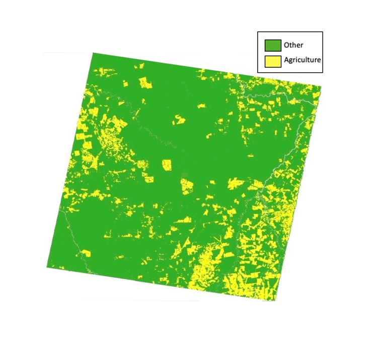
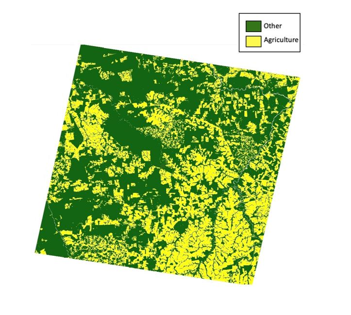

Previous school work
In my fourth year remote sensing course, I completed a change detection of agricultural expansion in Mato Grosso in Brazil from June 1996 to June 2005 using Landsat 5 TM. This project explored the conversion of non-agricultural land to agricultural lands and how it has exponentially increased in recent decades. Below, you can see the difference between the observed decade. On the left is the study area in June 1996 and on the right is in June of 2005. The yellow represents the agrilcultural lands, and can be observed to have exponentially increased over the decade.
 To be able to properly assess the change of land cover between the two images, a post-classification analysis was performed. The result of the post-classification was several different classes, but only four of which had values applicable to the study. These classes were then aggregated down to the following four classes: always forest (no change), forest to agriculture, agriculture to forest, and always agriculture. In figure 7, the grey represents areas that were not changed between the two imaging dates. Changes from forest to agriculture were significant in these cases. The yellow in the post-classification represents the amounts of forest that was lost between 1996 and 2005. The results indicate that there has been significant change in this study area during the nine years of study. To quantify the amount of change that is visible in the post-classification, areareport (Table 1) was used to calculate the total number of hectares that had changed as well as the percentage of land cover.